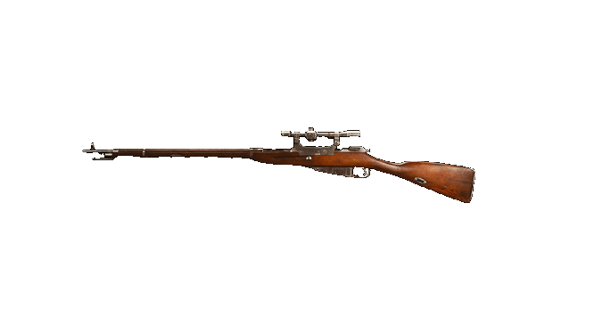

Doporučený loadout
Muzzle
MERCURY SILENCER
Barrel
EMPRESS 514MM F01
Stock
ZAC CUSTOM MZ
Underbarrel
HEAVY FOREGRIP
Magazine
.30-06 20 ROUND MAGS
Ammo Type
LENGTHENED
Rear Grip
LEATHER GRIP
Perk 1
AWARENESS
Perk 2
FULLY LOADED
Foto
Statistiky
Reálné informace
Třířadá puška M1891, známá na Západě jako Mosin-Nagant a v Rusku a bývalém Sovětském svazu jako Mosinova puška, je pětiranná vojenská puška se šroubovým závěrem a vnitřním zásobníkem. Vyskytuje se především s komorou na původní náboj 7,62 × 54 mmR.
Byl vyvinut v letech 1882 až 1891 a používaly ho ozbrojené síly Ruské říše, Sovětského svazu a různých dalších zemí. Jedná se o jednu z nejmasověji vyráběných vojenských pušek se šroubem v historii - od roku 1891 bylo vyrobeno více než 37 milionů kusů. Navzdory svému stáří se dodnes používá v různých konfliktech po celém světě.
Během rusko-osmanské války v letech 1877-1878 utrpěly ruské jednotky vyzbrojené převážně jednorannými puškami Berdan těžké ztráty proti tureckým jednotkám vybaveným opakovacími puškami Winchester, zejména při krvavém obléhání Plevna. To ukázalo ruským velitelům potřebu modernizovat všeobecnou pěchotní výzbroj armády.